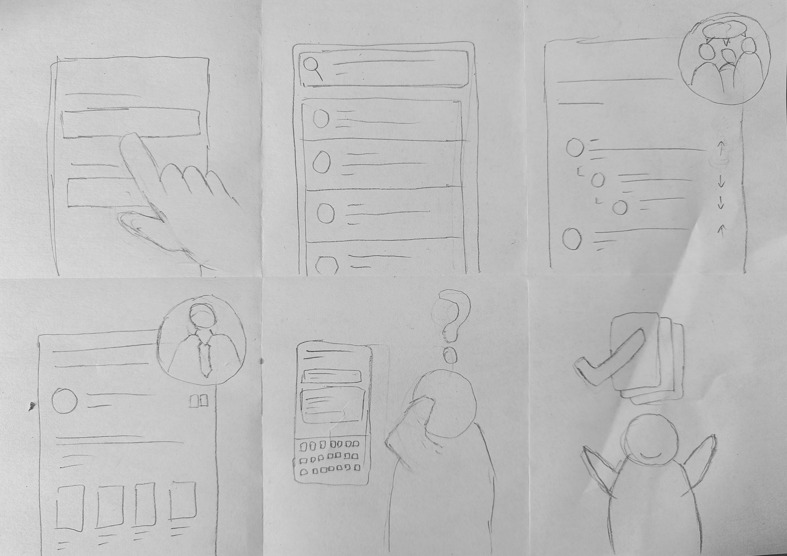
Project Mako
A Social Design UX study on Greek bureaucracy for legal immigrants. A project of Social Design & UX during MA in Digital Design
Social Group
Legal immigrants from Asian countries that live and work in Athens, Greece
Social Issue
They do not know how to navigate Greek bureaucracy, preventing them from feeling integrated into the native community.
Try it out
Research
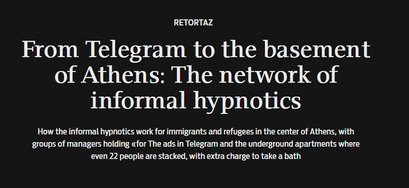
From headline to a full study
A news article on housing crisis for immigrants and refugees was the first thing I read that hooked my attention into the subject of immigrants. I had to read 35+ articles and research papers to understand better the situation this social groups faces. After iterating on their problems, I tried to get to the source, all leading to an unsuccessful integration due to origin and income bias.
The main issue holding them back from integrating is the complex Greek bureaucracy
Personas
Emre
Who: Pakistani man living in Greece for 3 years
Wants: Find affordable housing
Barrier: Missing legal papers
Workaround: Connects with communities online
Makati
Who: Filipino woman living in Greece working as a domestic
worker
Wants: Return to her country
Barrier: Doesn’t know the pension requirements
Workaround: Relies on others for information
Emre
Who: Bangladeshi man living for 20 years in Athens,
Greece
Wants: Wants to bring his family with him
Barrier: Has difficulty identifying reliable information
Workaround: Seeks information through social networks
Problem Statement
Based on Persona B
Makati needs a way to find out start collecting missing papers, because she needs access to benefits and pension.
Crazy 8s
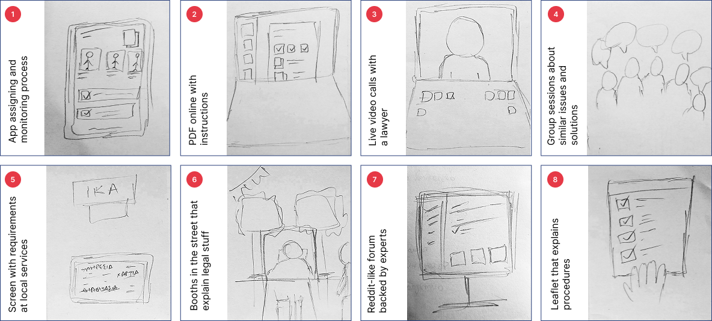
Concept A (Idea 7)
Forum where users can leave tips and experiences on legal issues
backed by and tested by experts.
A: Finds communities online
B:
Contacts her friends for advice
C: Looks for migration-related
procedures online
Why this idea may not work
Forums include unverified, incomplete or outdated information and
personal experiences
Very situational to find personalized
information
Older people are not familiar to using forums due to accessibility
reasons.
They don’t always trust information by strangers
Concept B (Idea 1)
App that enables finding required papers for legal procedures and
assigning lawyers to settle them while checking their progress.
A: Lawyers may help against discrimination
B: Doesn’t know her pension rights
C: Cannot easily find trusted information
Issue
Important information is spread across government platforms, documents, emails and administrative services.
Goal
The reduction of the uncertainty surrounding the process, not a promise of faster government decisions.
Informative & Assistive
A good place to start and get official advice while offered the tools to solve the problem.
Clean & Focused
Made to do one thing each time. Information overload can lead to hesitance.
Transparent
Lawyers: Who is the representative? How they will get compensated? People don’t trust them anyway. Talking directly with official representatives leaves no room for mistrust.
Accessibility
Open content
Users should be able to access all screens from the start of the navigation and fast
Adaptability
A useful app should adapt to the needs of the user, not the opposite
No account
User may not always have resources (email) to begin with. All data is stored on device, users can migrate their data between devices offline
Language support
Many people don’t speak English, they should feel comfortable when using the app By default, the app’s language is their country’s (most common) language
Comprehension
Clear steps
Accessibility is key so that users do not confuse steps or miss required actions
Help everywhere
Immigrants don’t know much about their new country. Everything they don’t understand has to be explained like they are 5 years old
Contrast / Scale
Basic UX principles that make content easy to find, especially when navigating content users aren’t familiar with
Tooltips / Links
Every legal term should include a description, explained as if the user is 5 years old
Trust
Safety
User must feel safe using the app, from uploading documents to calling support.
Familiarity
User should follow a process they are used to in the real world
Simple language
In order to trust something you have to understand what it is trying to say
Speak with humans
Speaking with humans feels more safe than finding information online, especially in order adults
Version 1
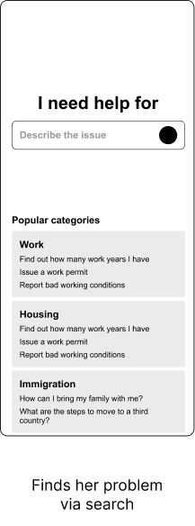
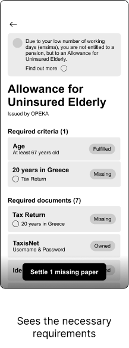
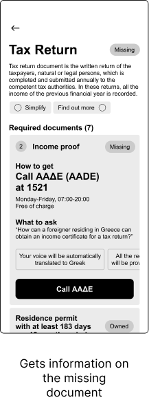
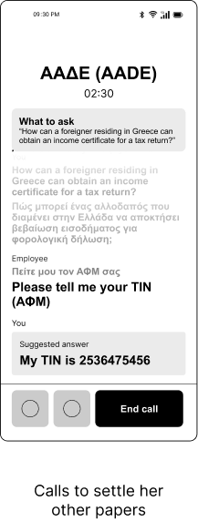
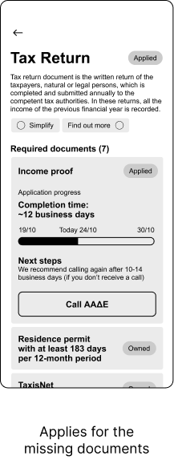
Problems
User did not find what they needed and was confused on what to pick from the Popular Categories section.
User’s phone was too short, so they could see the “Call” button. They could not continue their journey
User made a mistake in his words and could not correct what they were saying
The user was lost in the large amount of text presented
Version 2
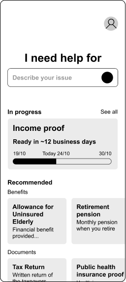
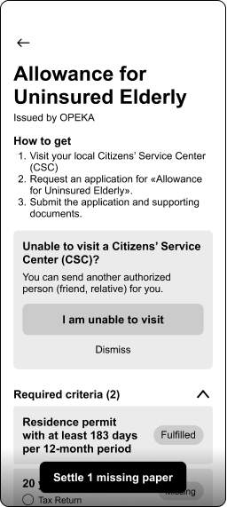
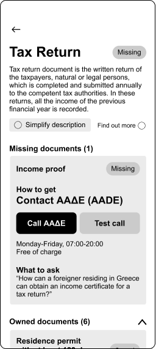
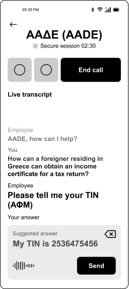
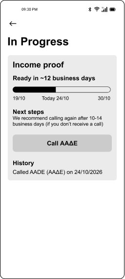
Recommended
Renamed “Popular Categories” to “Recommended”
• Old Popular
category was not personalized and was hard to read
•
Recommended section now displays suggested categories based on the
user
In Progress
Added a progress indicator for active applications with a link to a
dedicated page
• Users should be able to see their recent
applications fast
Required information
Required info is displayed using dropdowns
• Users can become
overwhelmed with a large amount of information driving them not to
leave the task.
• Dropdowns limit the visible amount of
information a user has to digest at the same time.
Alerts
Moved the ineligibility alert to the search page
• Users should
be informed before making an action. They should not be directed to
another page than the selected one
• Ability to visit alert is
now a question. Users are now clearly instructed on the changes in
the procedure
Actions
Added a new “Test Call” option
• Some users may not feel
comfortable talking directly to a representative. Providing an
option to test their confidence will incline them to call
regularly
• Call number was removed. Seeing a phone number
would immediately make the user call it from another calling app.
For optimal results, the user should call directly through the app
Call
Redesigned the pre-call logic
• Before calling, users will be
shown a modal with instructions and reminders about how to use the
screen and their safety
• Call controls were moved to the top
of the screen
• Users would click “End Call” by accident
instead of the intended “Send” button. Moving the controls on the
top separates the typing box from the call actions grouping content
into call and message controls.
Ready made answers
“What to ask” and “Suggested answer” integrated into one
•
Suggested answers are now integrated into the typing box where the
user can direly send them without having to repeat them out loud
•
“What to ask” would be used once per session, so there was no need
for a prominent box. Instead, when needed, it would be used as a
Suggested Answer
Transparency
Added a “Secure session” message
• Users should now the
information they provide will be used and opt out whenever they want
Reflection
Designing for social good requires a lot of research and careful consideration of the people affected by the issue. My process included moving between research and product design, trying to personalize the final solution based on validated user characteristics. Research and statistics highlighted the unbiased side of their problems and helped me understand the needs of my target audience more clearly. Reflecting on the process, I am confident that the final product has the capability to make their problem easier to tackle.